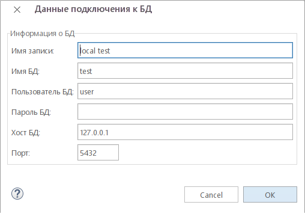

Настройки управляющие хранилищем парамеров подключения к базам данных.
На странице настроек pgCodeKeeper -> Редактор SQL -> Хранилище БД после нажатия на кнопку Редактировать хранилище БД появится диалог для управления записями настроек для подключения к базам данных. Присутствует возможность создания, удаления и редактирования хранилищ баз данных.
Для удаления хранилища выбрать необходиму запись и нажать кнопку удалить

Для добавления хранилища нажать кнопку добавить
 . Откроется редактор хранилища БД
в котором нужно указать необходимые параметры: имя записи, имя БД, пользователь БД, пароль БД, хост БД, порт.
Нажать на кнопку OK. На странице настроек нажать кнопку Apply или OK и список хранилищ будет сохранен.
. Откроется редактор хранилища БД
в котором нужно указать необходимые параметры: имя записи, имя БД, пользователь БД, пароль БД, хост БД, порт.
Нажать на кнопку OK. На странице настроек нажать кнопку Apply или OK и список хранилищ будет сохранен.
Для редактирования хранилища выделить объект хранилища баз данных, нажать кнопку редактировать . Откроется редактор хранилища БД в котором необходимо изменить параметры. Нажать на кнопку OK. На странице настроек нажать кнопку Apply или OK и список хранилищ будет сохранен.
